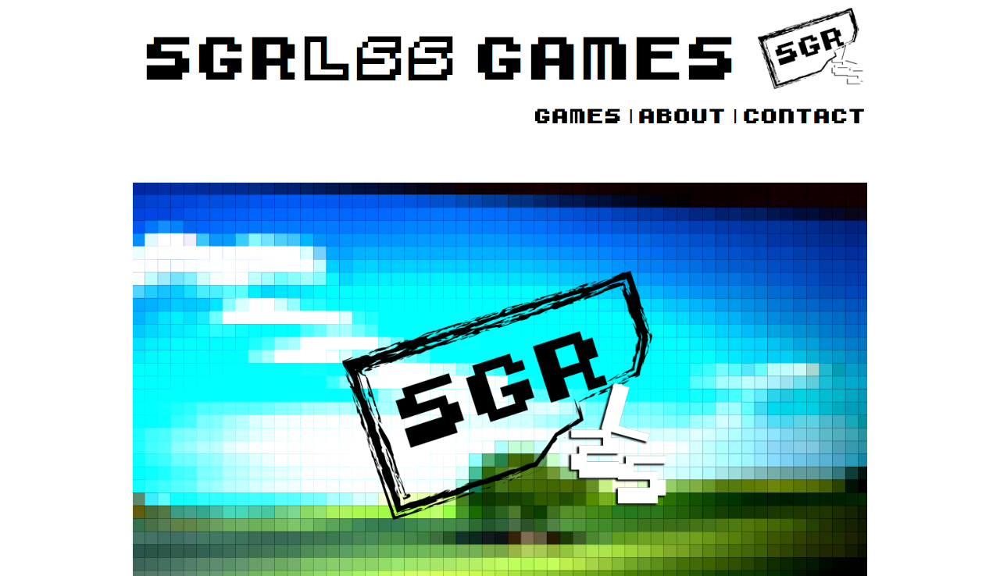

SGRLSS Games
2014 - Thesis Project - Processing based games, mini arcade cabinet, iPad, Website, twitter, performance
SGRLSS Games is my senior theis project. A false persona running an indie game development company is used as a front to release games and arcade cabinets under the guise of health "exergames" (games that help you exersize, get healthier, etc). In actuality the games parody the genre and verge on the ridiculous and absurd.
The games released include a sleep simulator called 40 Winks that allows the user to simulate sleep through the game simply going to a black screen with a time display for eight hours, a walking simulator that allows the player to walk around via a video feet rom a camera on top of the arcade cabinet, and focus simulator that allows only artificial focus on the digital screen to static imagery.
The games all demonstrate a satire of exergames as well as the indie game industry while simultaneously existing as an absurdist piece of artwork.

see website
Download Sketches
(Requires custom services to launch apps from launch menu)